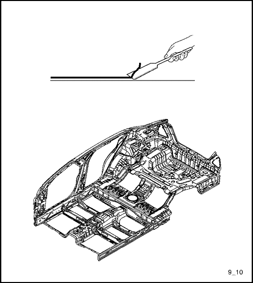

SELLADO, CALAFATEADO Y ATENUAMIENTO
SELLADO & CALAFATEADO
Nota: NOTA: Selle las siguientes zonas para evitar infiltraciones de aire, agua y corrosión.
COMPARTIMENTO DEL MOTOR
SALPICADERO
PISO Y COMPARTIMENTO DEL MALETERO
TECHO
CAPÓ Y TAPA DEL MALETERO
PUERTA TRASERA Y DELANTERA
ATENUADOR
DESCRIPCIÓN GENERAL
El material insonorizante está diseñado y utilizado de tal forma que reduzca las vibraciones y el ruido. Asimismo, desempeña su papel en el mantenimiento de la rigidez estructural del panel.
PROCEDIMIENTO DE REPARACIÓN
- Desmonte los componentes asociados.
- Asientos, moquetas.
- Guarnecido, otros.
- Desmontaje del material insonorizante dañado.
- Levante con cuidado el material insonorizante dañado con una espátula de acero.
- Limpieza y secado.
- Antes de aplicar el material insonorizante, limpie y seque bien las zonas donde lo vaya a aplicar.
- Presente el nuevo material insonorizante en los paneles donde lo vaya a colocar.
Nota: Evite los taladros de fijación de componentes y los taladros de servicio.
- Cómo pegar el material insonorizante.
- Caliente la superficie del material insonorizante con un soplete o pistola de calentamiento, hasta que se adhiera por sí mismo.
- Apriete y péguelo sobre el panel utilizando una espátula de goma.
Nota: Para poder aprovechar al máximo el material insonorizante, su superficie tiene que adherirse a los paneles y estar en perfecto contacto con los mismos.
-
Precaución: Tenga cuidado de no quemar las partes de compuesto aislante cuando lo esté calentando.



- Monte los componentes asociados.
- Móntelos en la misma secuencia en que los desmontó, pero en orden inverso.